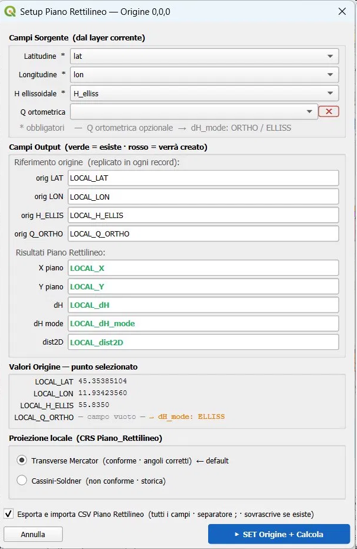
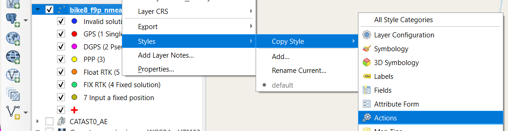
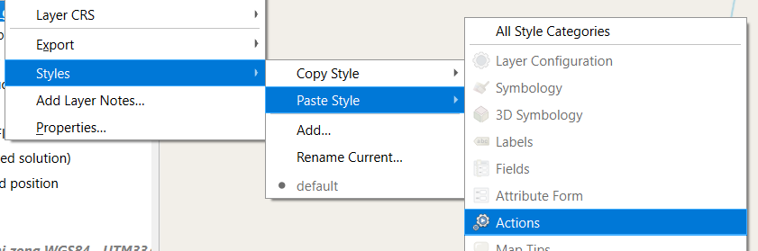
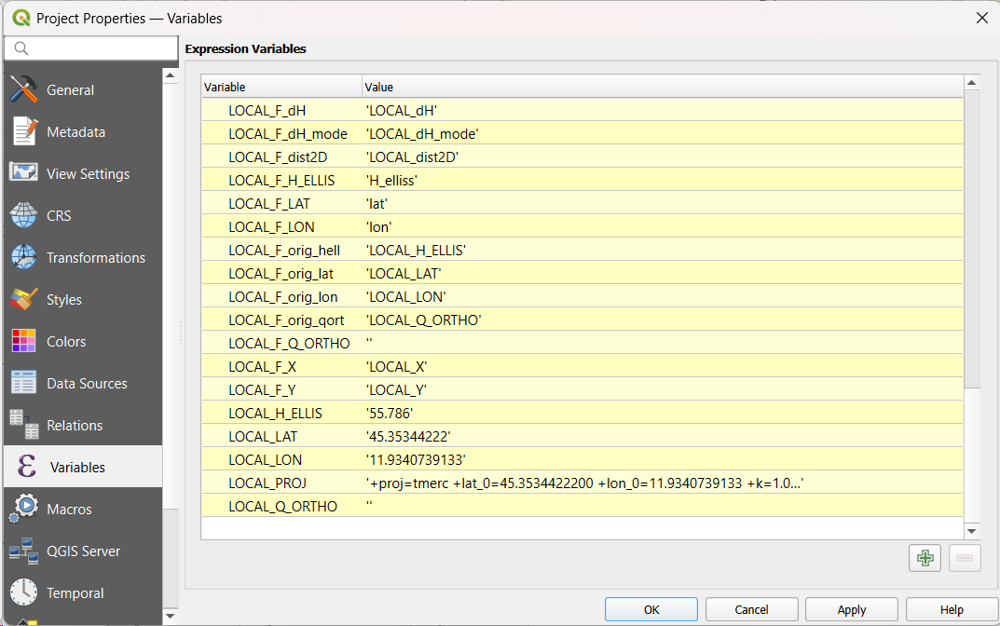
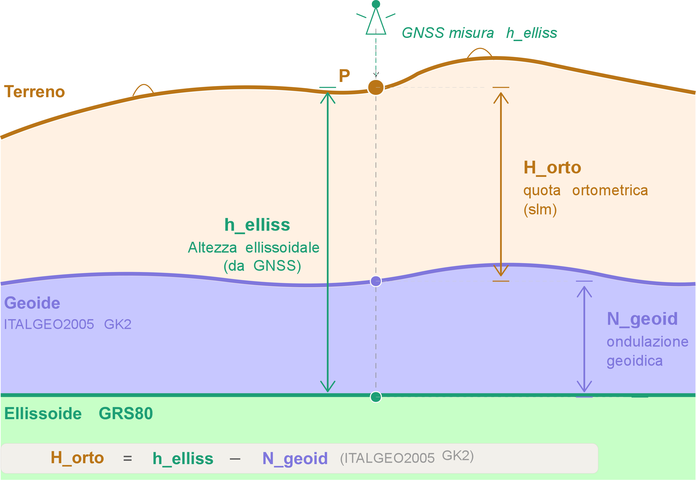

Piano Rettilineo Locale Teoria e implementazione in QGIS
Trasformazione coordinate UTM → piano locale con fattore di scala K combinato
1 · Introduzione
Le coordinate UTM (Universal Transverse Mercator) sono coordinate piane rettilinee, ma le distanze calcolate sulla griglia non corrispondono alle distanze reali misurate sul terreno. Due effetti si sommano:
Distorsione di proiezione — la proiezione cilindrica UTM introduce un fattore di scala k_proj che varia con la distanza dal meridiano centrale.
Riduzione altimetrica — le misure su terreno a quota h devono essere riportate all'ellissoide tramite k_h.
Il piano rettilineo locale è il piano tangente all'ellissoide nel punto di origine scelto dall'operatore. In esso le distanze coincidono con quelle reali al suolo, applicando il fattore combinato :
K = k_proj · k_h.
2 · I tre piani di riferimento
In un rilievo GNSS convivono tre superfici di misura distinte, geometricamente sghembe tra loro:
Fig. 1 — I tre piani di riferimento: piano rettilineo locale (viola), griglia UTM (rosso), piano topografico (ambra) ed ellissoide GRS80 (verde). Le distanze d_PR, d_UTM e d_terreno differiscono per il fattore K.
3 · Formule
3.1 Fattore di scala della proiezione UTM
Il fattore di scala k_proj dipende dalla distanza ΔE = E − 500 000 dal meridiano centrale della zona UTM:
k_proj(E) = k₀ · [ 1 + ΔE² / (2R²k₀²) ]
dove k₀ = 0.9996 (scala nominale UTM), R = 6 371 000 m, ΔE = E − 500 000 m
Proprietà chiave: k_proj dipende solo da E, non da N. Un rilievo N-S ha k costante; un rilievo E-O ha k variabile.
Nota — Approssimazione di Taylor al 2° ordine:
la formula adottata è l'espansione della formula Transverse Mercator sferica completa:
Il termine trascurato (4° ordine) per ΔE = 300 km vale ≈ 0.09 ppm — trascurabile per qualsiasi applicazione pratica.
Nella formulazione ellissoidale rigorosa (GRS80), R è sostituito dal raggio di curvatura N(φ), introducendo una dipendenza dalla latitudine qui omessa.
3.2 Riduzione altimetrica
Le distanze al suolo a quota h devono essere ridotte all'ellissoide:
k_h = R / (R + h)
h = quota ellissoidale media del rilievo (m)
3.3 Fattore combinato K
K = k_proj · k_h
3.4 Trasformazione coordinate UTM → Piano rettilineo
Definita l'origine (E₀, N₀), le coordinate nel piano locale sono:
x_piano = (E_UTM − E₀) / K
y_piano = (N_UTM − N₀) / K
3.5 Metodo ECEF→ENU (implementato nell'azione QGIS - Setup 0,0,0 Piano Rettilineo)
Il fattore K descrive la relazione UTM→locale nel formalismo topografico classico (sezione 3.4). L'implementazione ECEF→ENU costituisce la formulazione geocentrica rigorosa dello stesso concetto: la rotazione della terna geocentrica incorpora automaticamente curvatura ellissoidale e riduzione altimetrica, rendendo superflua l'applicazione esplicita di K.
I campi local_e e local_n sono quindi equivalenti a x_piano e y_piano, ma calcolati senza approssimazioni intermedie.
La procedura QGIS predisposta utilizza la trasformazione rigorosa Geocentrica→ENU, che non richiede K esplicito perché incorpora automaticamente curvatura e riduzione:
Fix Quality e modello geoidico:
In un rilievo RTK/NRTK il ricevitore GNSS lavora in modalità Float RTK (fix_quality = 5) quando ha ricevuto le correzioni differenziali dalla stazione base (o dalla rete NTRIP) ma non ha ancora risolto le ambiguità intere di fase portante (stimazione reale tramite minimi quadrati — algoritmo LAMBDA).
La precisione planimetrica in Float RTK è tipicamente 20–50 cm (1σ), significativamente inferiore al centimetro del Fix RTK (fix_quality = 4).
Il Float si verifica normalmente:
- nella fase di inizializzazione del ricevitore (convergenza, da pochi secondi a qualche minuto);
- in presenza di mascheramenti satellitari parziali (edifici, vegetazione);
- quando il numero di satelliti visibili scende sotto la soglia critica per il fixing.
È da ritenersi corretto utilizzare in Float RTK il modello geoidico ITALGEO2005 GK2 in EPSG 4258 (ETRS89), coerentemente con la minore precisione altimetrica attesa. In Fix RTK viene applicato il modello in EPSG 6706 (RDN2008), realizzazione nazionale italiana di ETRS89 e datum di riferimento delle reti NTRIP italiane più diffuse.
3.6 Variazione di K in funzione di E e h
La figura interattiva seguente mostra come k_proj cresce con la distanza dal meridiano centrale, e come la quota influisce su k_h:
E dal meridiano centrale (km)200 km
Quota media h (m slm)50 m
Fig. 2 — Variazione di K in funzione della distanza dal meridiano centrale e della quota. Slider interattivi.
Zona / area
E (km)
h (m)
k_proj
k_h
K totale
Δd / km
Padova / Chioggia
238
10
1.0001878
0.9999984
1.0001862
18.6 cm
Vicenza
200
40
1.0001330
0.9999937
1.0001267
12.7 cm
Verona
158
60
1.0000833
0.9999906
1.0000739
7.4 cm
Cortina d'Ampezzo
176
1224
1.0001036
0.9998081
0.9999118
8.8 cm
Meridiano centrale (9°E)
0
0
0.9996000
1.0000000
0.9996000
40.0 cm
4 · Misura animata A→B
La figura seguente illustra la differenza tra le tre misure durante il progredire della misurazione da A a B. La distorsione è ingrandita per renderla visibile graficamente.
Velocità animazione* distorsione ×20 per visibilità
Fig. 3 — Animazione della misurazione A→B sui tre piani. I bracket crescono a velocità diverse: d_UTM (rosso) cresce più velocemente di d_PR (viola) per il fattore K.
5 · L'azione QGIS: Setup 0,0,0 Piano Rettilineo
La procedura QGIS predisposta è installata come Python Action (trigger: Canvas click) sul layer di rilievo. Al click su un punto il punto diventa l'origine del piano locale e tutti i record vengono ricalcolati.
5.1 Flusso operativo
1
Click su un punto RTK Fix nel Map Canvas Il punto cliccato diventa l'origine (E₀, N₀, h₀) del piano locale. Il dialogo si apre pre-compilato con le variabili di progetto salvate.
2
Dialogo Setup — configurazione campi Combobox per selezionare i campi sorgente (lat, lon, H_elliss, Q_ortometrica). Campi output con validazione verde/rosso: verde = campo esiste, rosso = verrà creato.
3
Scelta proiezione locale Transverse Mercator (conforme, angoli corretti — default) oppure Cassini-Soldner (non conforme, storica). Il PROJ string viene salvato in LOCAL_PROJ.
4
Calcolo ECEF→ENU su tutti i record Per ogni feature: geodeticToECEF → dX,dY,dZ → rotazione ENU. Scrittura batch con changeAttributeValues. Progress bar durante l'elaborazione.
5
Export CSV + import come nuovo layer Se la checkbox è attiva: esporta il layer completo in CSV (_PR01.csv, _PR02.csv, …) con separatore ; e lo reimporta con X=LOCAL_X, Y=LOCAL_Y. Il CRS (PROJ string anonimo) viene applicato via setCrs() e serializzato inline nel .qgs.

Fig. 4 — Dialog predisposto in QGIS.
Come trasferire le azioni su un altro layer:
A partire dal progetto .qgs predisposto è possible trasferire l'azione python a un diverso file rilevo GNSS
con tasto destro sul layer → Styles → Copy Style → Actions,

Copy Style.
poi sul layer destinazione → Styles → Paste Style → Actions.

Past Style.
5.2 Campi calcolati nel layer
Al termine del SET il layer contiene i seguenti campi aggiuntivi (creati se mancanti):
Campo
Tipo
Contenuto
LOCAL_LAT
Double
Latitudine origine (E₀)
LOCAL_LON
Double
Longitudine origine (E₀)
LOCAL_H_ELLIS
Double
Quota ellissoidale origine
LOCAL_Q_ORTHO
Double
Quota ortometrica in origine — calcolata con modello ITALGEO2005 GK2
LOCAL_X
Double
Coordinata E nel piano locale (m)
LOCAL_Y
Double
Coordinata N nel piano locale (m)
LOCAL_dH
Double
Differenza quota ortometrica rispetto all'origine
LOCAL_dH_mode
String
ORTHO (GK2 RDN2008) oppure ELLISS (fallback)
LOCAL_dist2D
Double
Distanza planimetrica da origine = √(X²+Y²)
5.3 Variabili di progetto QGIS utilizzate
LOCAL_LAT / LOCAL_LON
Coordinate geografiche dell'origine corrente
LOCAL_H_ELLIS
Quota ellissoidale origine
LOCAL_Q_ORTHO
Quota ortometrica in origine — calcolata con il modello di ondulazione ITALGEO2005 GK2 (h_elliss − N_geoid)
LOCAL_PROJ
PROJ string completo (+proj=tmerc …) — usato per il CRS del CSV importato
LOCAL_F_LAT / LON / H_ELLIS / Q_ORTHO
Nomi dei campi sorgente nel layer
LOCAL_F_X / Y / dH / dH_mode / dist2D
Nomi dei campi risultato
Nota sul CRS del layer CSV: il PROJ string in LOCAL_PROJ
viene applicato via QgsCoordinateReferenceSystem.createFromProj()
creando un CRS anonimo (senza USER:XXXXX). QGIS serializza la definizione
completa inline nel file .qgs — il progetto è quindi portabile su qualsiasi
macchina senza configurazioni aggiuntive.

Fig. 4.2 — Pannello Project Properties → Variables con le variabili
LOCAL_* impostate dall'azione Setup 0,0,0 Piano Rettilineo.
6 · Esempio pratico — zona Veneto
Rilievo GNSS RTK in zona Padova (UTM 32N), quota media 10 m slm, distanza dal meridiano centrale 238 km:
K = 1.00018780 · 0.99999843
= 1.00018623
Correzione su 1 km : (K−1) · 1000 = 186 mm
Correzione su 12 km : (K−1) · 12000 = 2.23 m
Un rilievo di 12 km in questa zona produce distanze UTM superiori di circa 2 m rispetto alle distanze nel piano locale (ridotte al piano tangente). Il piano rettilineo locale elimina questa distorsione.
7 · Altezza ellissoidica, ondulazione geoidica e quota ortometrica
7.1 Le tre quote
In geodesia si distinguono tre grandezze altimetriche distinte:
h_elliss = quota ellissoidale [misurata dal GNSS rispetto a GRS80]
N_geoid = ondulazione del geoide [separazione geoide–ellissoide]
H_orto = quota ortometrica (slm) = h_elliss − N_geoid
Il GNSS fornisce direttamente h_elliss. La quota ortometrica — quella
fisicamente significativa per un topografo, corrispondente al livello del mare — si ottiene
sottraendo l'ondulazione del geoide.

Fig. 5 — Le tre superfici di riferimento geodetico e le tre quote.
Il GNSS misura direttamente h_elliss;
sottraendo l'ondulazione N_geoid (da ITALGEO2005 GK2) si ottiene
la quota ortometrica H_orto.
7.2 Il modello ITALGEO2005 GK2
Nella raccolta dei dati GNSS viene utilizzo il modello di ondulazione del geoide ITALGEO2005
in formato griglia, ricavato dai file IGM .gk2:
Variante
EPSG
Sistema di riferimento
Uso nel rilievo GNSS
GK2 ETRS89
4258
ETRS89
RTK Float (fix_quality = 5)
GK2 RDN2008
6706
RDN2008
RTK Fix (fix_quality = 4)
La scelta di applicare il modello più preciso (RDN2008) solo in condizione di Fix è
intenzionale: la precisione centimetrica del Fix giustifica la correzione geoidica rigorosa,
mentre in Float la precisione decimettrica rende la differenza tra i due modelli trascurabile.
7.3 Effetto sulla componente verticale
Il metodo ECEF→ENU calcola local_u come differenza di quote ellissoidali:
local_u ≈ h_elliss_rover − h_elliss_base
Questo non coincide con la differenza di quote ortometriche se l'ondulazione del geoide
varia tra i due punti:
local_dH = H_orto_rover − H_orto_base
= (h_elliss_rover − N_rover) − (h_elliss_base − N_base)
= local_u − (N_rover − N_base) ΔN = N_rover − N_base → variazione dell'ondulazione tra origine e punto rover
7.4 Entità della correzione — zona Veneto
Scenario
ΔN tipico
Effetto su local_dH
Baseline < 10 km, pianura
1–3 mm
trascurabile
Baseline 30–50 km, NTRIP
5–15 mm
borderline per precisione cm
Costa → Dolomiti
20–60 mm
non trascurabile
Meridiano centrale → costa adriatica
40–80 mm
significativo
7.5 Come viene gestito nel progetto
Il calcolo di local_dH è separato da quello planimetrico
proprio per questo motivo:
# Componente planimetrica — usa h_elliss in ECEF→ENU (corretto)
local_e, local_n ← geodeticToECEF(lat, lon, h_elliss) → rotazione ENU # Componente verticale — usa quota ortometrica (rigorosa)
N_rover ← interpolaGK2_6706(lat_rover, lon_rover)
H_orto_rover = h_elliss_rover − N_rover
local_dH = H_orto_rover − LOCAL_Q_ORTHO LOCAL_Q_ORTHO = quota ortometrica origine, calcolata al SET 0,0,0 con GK2
7.6 Componente planimetrica — perché non serve la quota ortometrica
Usare H_orto al posto di
h_elliss in geodeticToECEFnon introduce alcun errore planimetrico.
La dimostrazione è diretta: sostituire H_orto
introduce in ECEF un errore puramente radiale (lungo la normale all'ellissoide):
Applicando la rotazione ENU a questo errore radiale:
e_err = −sinλ·ΔX + cosλ·ΔY = 0 ← si annulla esattamente
n_err = −sinφcosλ·ΔX − sinφsinλ·ΔY + cosφ·ΔZ = 0 ← si annulla esattamente
u_err = cosφcosλ·ΔX + cosφsinλ·ΔY + sinφ·ΔZ = −N_geoid ← solo in verticale
Un errore radiale si proietta a zero in orizzontale
e pari a −N_geoid in verticale.
Questo giustifica geometricamente la separazione nel calcolo:
h_elliss per la planimetria (ECEF→ENU)
e il modello geoidico ITALGEO2005 GK2 per la quota ortometrica
(local_dH).
I due calcoli sono indipendenti e complementari.
Sintesi: la quota geoidica non influisce sulla planimetria.
Influisce solo sul componente verticale local_dH,
dove viene applicata correttamente tramite ITALGEO2005 GK2.